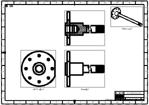

Select the projected and orthogonal views on your drawing sheet.
Right-click one of the highlighted borders, and then choose Style.
In the View Style dialog box, click the Visible Lines tab, and then change the line width from 0.18 mm to 0.25 mm.
Click OK to change the visible lines in the views.

Close all parts.